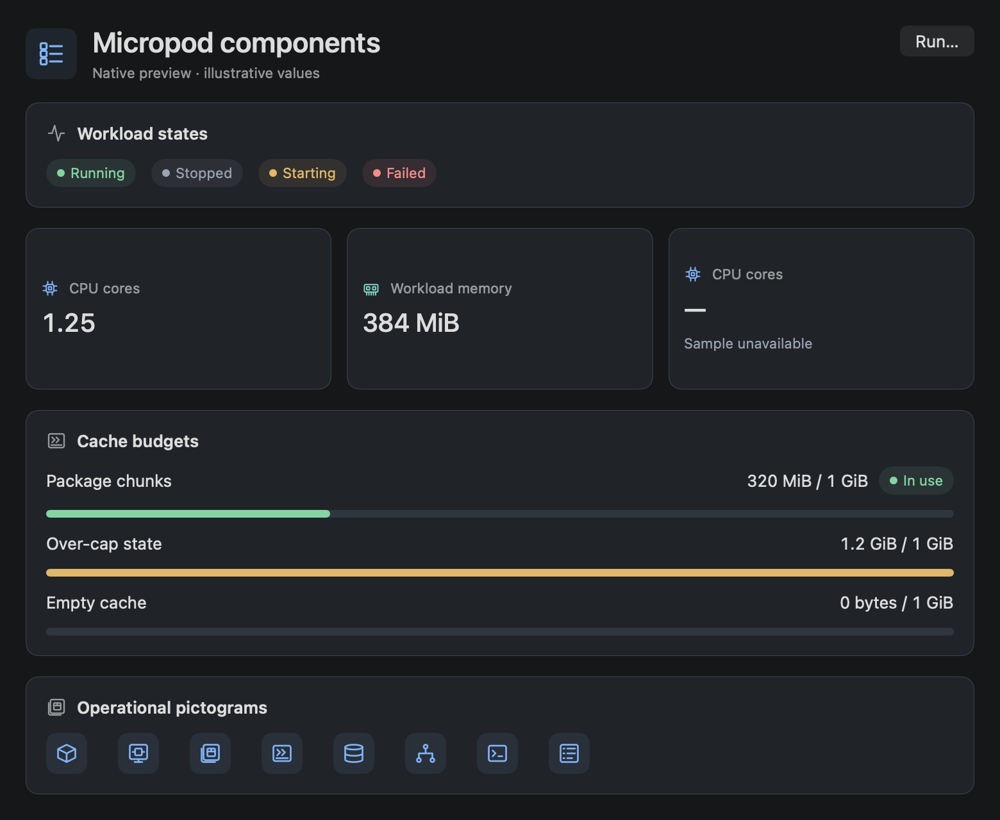
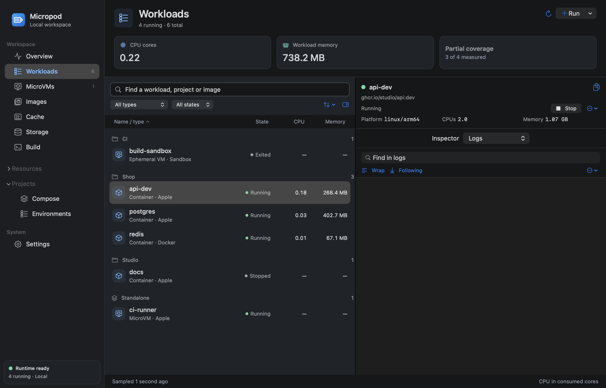
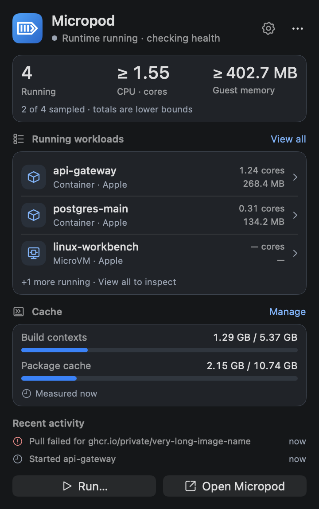
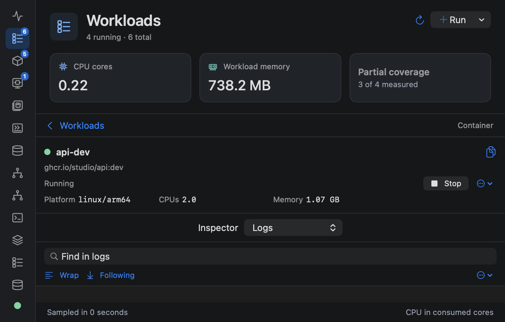
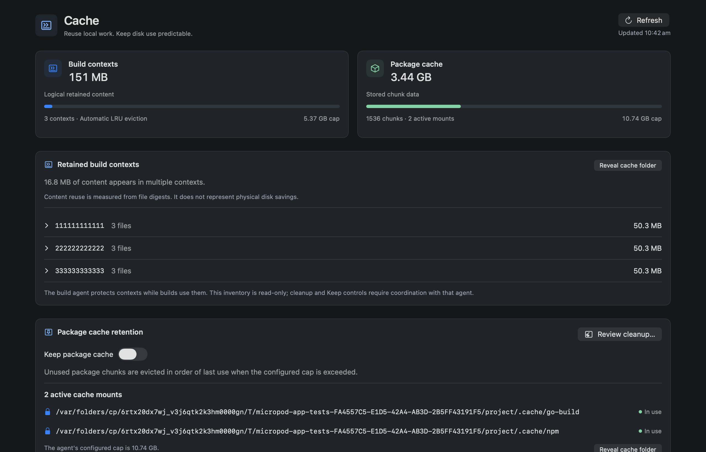

Explore all responsive layouts →
← Design kit
Micropod, implemented.
These are native component renders from the implemented app, using isolated test fixtures. They show layout and states; the running app reads your real workload and cache inventory.
A shared native component family
Page headers, generated pictograms, explicit states, measured readings and static cache meters now share the same visual language across every workspace and the tray.

One workload workspace
Search and group containers and persistent MicroVMs while inspecting logs, metrics, files and configuration. Missing readings remain unavailable.

A quick glance, and a useful small window


Measured local caches
Build contexts expose their retained manifests. Package caching supports persistent Keep and reviewed cleanup, coordinated with the owning daemon.
